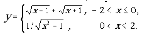
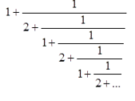

Виконавець
| Посада: | Студент |
| Курс: | IV |
| Група: | ІПЗ-42 |
| ПІБ: | Іваненко А.Ю |
| Рік навчання: | 2021-2022 |
Зміст
Мета
Умова задачі
Структура програми
Обгрунтування вибору середовища
Код програми в коментарях
Посилання на проект з вихідним кодом
Скріншоти результатів
Аналіз достовірності результатів
Висновки
Мета
Опанувати теоретичні основи застосування рекурентних співвідношень для
обчислення тригонометричних, експоненціальних, степеневих функцій та розробити програми
функціональними мовам програмування для обчислення їх значень
Умови задач
Задача 1

Задача 2

Структура програми
Схема задачі 1
Схема задачі 2
Обгрунтування вибору середовища та мови функціонального програмування
Online Clisp IDE https://www.jdoodle.com/execute-clisp-online/ Середовище вибране через: a) - Легкий зрозумілий інтерфес b) - Не потрібно нічого встановлювати на комп'ютер. Мова Sheme вибрана через: а) - Лекції ведуться на цій мові. b) - Простий синтаксис.
Код програми з коментарями
Код програми 1
(define (sq x err) ; функція квадрату (define (sq2 x yn yn-1 err ) ; функція квадрату внутрішня (if ( < (abs (- yn yn-1)) err) ; перевірка чи функція змінюється менше чим похибка yn (sq2 x (* 0.5 (+ yn (/ x yn))) yn err ); рекурсивний виклик функції ); ) (sq2 x 1 1000 err); початковий виклик функції ) (define (interval1 a b h err); функція інтервалу (interval a b h a err ) ) (define (interval a b h t err); внутрішня функція інтервалу (define (f1 a b h t err); для першогї умови (newline) (display "t= ") (display t) (newline) (display "rez=") (display (+ (sq (- t 1) err ) (sq (+ t 1) err))) (newline) (display "rez_real=") (display (+ (sqrt (- t 1) ) (sqrt (+ t 1) ))) (newline) (interval a b h (+ t h) err) ) ( define (f2 a b h t err); для другої умови (newline) (display "t= ") (display t) (newline) (display "rez =") (display( / 1 (sq (- (* t t ) 1) err))) (newline) (display "rez_real=") (display( / 1 (sqrt (- (* t t ) 1) ))) (newline) (interval a b h (+ t h) err); ) (cond ( ( or (< t 0 ) (= t 0) );умова 1 (f1 a b h t err); ) ( ( or (< t b ) (= t b) ); умова 2 (f2 a b h t err); ) (else 1); )) ( interval1 1.4 10 0.5 0.0001 ); виклик функції інтервалу (newline);
Код програми 2
( define (f1 err); зовнішня функція
(define (f2 n n-1 err); внутрішня функція
( if ( < ( abs (- n n-1 )) err ); перевірка на точність
n
( f2 (+ 1 (/ 1 (+ 2 (/ 1 n ) ))) n err )
)
)
(f2 1 100 err);запущення внутрішньої функції
)
(display( f1 0.00001)); виклик функції
(newline)
Посилання на проект з вихідним кодом
Скрішоти результаів
програма 1
Діапазон значень від 2 до 4 з кроком 0.5
програма 2
Аналіз достовірності результатів
В першій програмі правильність було перевірено дублюванням стандартною функцією з мови програмування.
В другій задачі можемо помітити, що при глибині 1 вираз прийме значенння 1+1\2 = 3\2 , що сходиться з відповідю.
Висновки
В результаті роботи було вирішено дві заданні програмні задачі за допомогою мови Shema.Впершій задачі, були випадки коли, в результаті обчислень в з'являлись корні відємних чисел через, що алгоритм "зависав" на них. Тому був вибраний інший діапазон
Другу задачу було вирішено побудовою дробу у висхідному стилі.